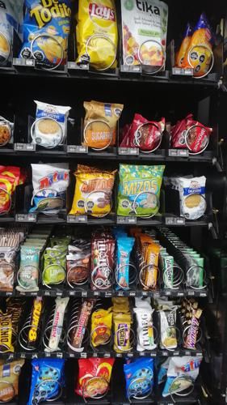
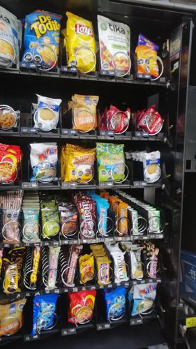

Antes de AbastecerNo se detectaron espirales vacios.

id 418.369 |
Luego de AbastecerNo se detectaron espirales vacios.

id 418.370 |
|
| Fecha |
Reporte |
Vacios ANT |
% Abast |
% Quiebre |
Sum QTY |
Rotación Diaria |
Abast hace (días) |
| 19-08-2021 |
Viendo |
0 |
7.7 |
- |
45 |
22 |
2 |
| 17-08-2021 |
Ver |
3 |
23.3 |
7.5 |
136 |
27 |
5 |
| 12-08-2021 |
Ver |
2 |
13.4 |
5.0 |
78 |
39 |
2 |
| 10-08-2021 |
Ver |
1 |
16.8 |
2.5 |
98 |
19 |
5 |
| 05-08-2021 |
Ver |
6 |
18.0 |
15.0 |
105 |
52 |
2 |
| 03-08-2021 |
Ver |
0 |
13.7 |
- |
80 |
16 |
5 |
|
|
|
Se abasteció la máquina con:
Total de 45 unidades de 3 productos.
| Qty. |
Producto |
SubFamilia |
Familia |
| 20 |
Mini Selz 45 Gr |
Galletas |
Snack |
| 15 |
Galleta Din Don 24Ux46Gr |
Galletas |
Snack |
| 10 |
Papas Mediterraneas Orega |
Snack |
Snack |
| Productos más abastecidos en últimas 6 semanas:
| Nro. Abast |
Qty/Abast |
Producto |
Abast hace (días) |
Fecha |
| 11 |
15 |
Super Ocho Clasico 24 Gr |
2 |
17-08-2021 |
| 10 |
14 |
Brownie Nutrabien Display |
2 |
17-08-2021 |
| 10 |
7 |
Ramitas Queso Evercrisp |
2 |
17-08-2021 |
| 9 |
9 |
Brownie Choc 24Un Nutrabi |
16 |
03-08-2021 |
| 8 |
7 |
Tuareg Coco Indiv. 24X48 |
9 |
10-08-2021 |
| Productos menos abastecidos en últimas 6 semanas:
| Nro. Abast |
Qty/Abast |
Producto |
Abast hace (días) |
Fecha |
| 1 |
4 |
Papas Mediterraneas Jamon |
7 |
12-08-2021 |
| 1 |
4 |
Papas Fritas Lays Evercri |
2 |
17-08-2021 |
| 1 |
6 |
Muibon Flow Chocolate 48G |
2 |
17-08-2021 |
| 1 |
10 |
Papas Nativas Andina Tika |
2 |
17-08-2021 |
| 1 |
10 |
Papas Mediterraneas Orega |
0 |
19-08-2021 |
|
|